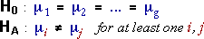
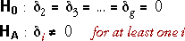
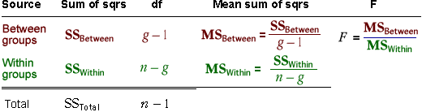
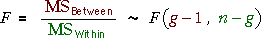
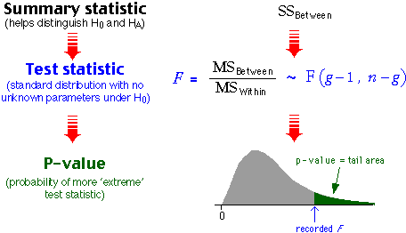
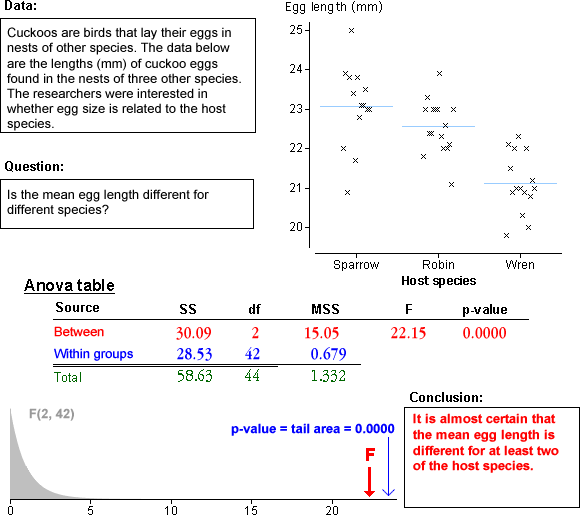

Hypotheses
When the model is written in the form,

the test for equal group means assesses the hypotheses,

When this model is expressed as a GLM with indicator variables,

the corresponding hypotheses are:

The two ways to express the model and hypotheses are identical.
When the model is expressed as a GLM, the hypotheses test whether any of the explanatory variables (indicator variables) are related to the response, and the standard anova test for a GLM does this.
Anova table
The explained (i.e. between groups) and residual (i.e. within groups) sums of squares form the basis of the following anova table.

Note that the between-groups sum of squares had g - 1 degrees of freedom since there are (g - 1) indicator variables.
P-value
If the null hypothesis holds (i.e. all group means are equal), the F ratio can be proved to have a standard distribution called an F distribution with (g - 1) and (n - g) degrees of freedom,

When the alternative hypothesis is true (some group means are different), SSBetween is expected to be larger and this also results in a larger value for the F ratio. The p-value for the test is therefore the upper tail area of this F distribution.

The formulae may seem a bit complicated, but:
The details are unimportant — in practice, you will use a computer to evaluate the anova table and p-value.
Examples
Analysis of variance F tests are used to analyse a few data sets below.
